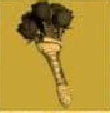

Virginia Occidental
Enero, 27 de 2021
1ra Edición
Valor 2 chapas
La Bazeta De Appalachia
Parcialmente nublado.
Probables Tormentas
Radiactives.
Llega el Parche de Inventario

Este nuevo parche llega a Fallaout 76
para ayudar a organizar mejor
nuestro inventario entre otras cosas.
A continuación las novedades más importantes:
Aumento del alijo, de 800 a 1200
Nuevas pestañas en el Pip-Boy,
ahora armaduras y atuendos están
por separado y comida y bebida
están separadas de ayuda, lo cual
agilizara mucho la búsqueda de
nuestros objetos. También se
incorpora la pestaña de "nuevo" donde
encontraremos los ultimos items
recogidos en la sesión actual
ordenados en el orden en el que se
recogen.
Nueva función "peso apilado" nos
muestra la el peso total de un item
que tengamos en catidad (Tip:
atentos con los items de ayuda y
comida y bebida, que suelen ser los
mas se acumulan sin darse
cuenta!)
También encontraremos mejoras en la interfaz de la vista en mapa de las maquinas vendedoras de jugadores. Ahora aparecen diferenciadas armas y armaduras por cantidad de estrellas legendarias, lo cual sin duda nos ahorrará muchos viajes rápidos.
Operaciones Diarias
A partir de esta actualización al
completar una operación el rango de "Maestre" se
garantizará la obtención de al menos
un objeto de entre las recompensas
poco comunes.
Conocimiento Prohibido
La conocida misión secundaria ha sido reactivada luego de haber solucionado los problemas con los datos técnicos. Y ahora no solo pueden depositarse en Campamento Aventura, también son recibidos en Fuerte Atlas por la escriba Odessa Valdez de la Hermandad del Acero, a quien vemos en la siguiente imagen.
Consejo diario: no olvides llevar siempre un poco de Rad-X por si te topas con la tormenta radiactiva ;-)
Novedades Tienda Atómica
En la tienda atómica se ha añadido una opción para que muestre solo los ítems que no hemos comprado, para facilitar la navegación y mejorar la visualización.
Esta semana encontraremos las
siguientes novedades.
Cámara de Habitaciones de Refugio
1500 átomos
Servoarmadura de Ranger del Parque
1200 átomos
Además de muchas ofertas entre las
que destacan los letreros de
Quantum, Old Possum y Pickaxe,
Conjunto de bar elegante, Conjunto
de barra de Slocum's Joe, entre
otras.
Evento por tiempo limitado!
No olvides reclamar "Rompecorazones" para la Llave Grifa y participar del evento "Muero de Amor".
donde debéras completar desafios diarios y semanales que otorgarán recompensas como tarteras, kits de reparación, sobre de "perks", y objetos de tiempo limitado (atuendos de RobCo, Bungaló rústico y Casco de pescador de langostas)